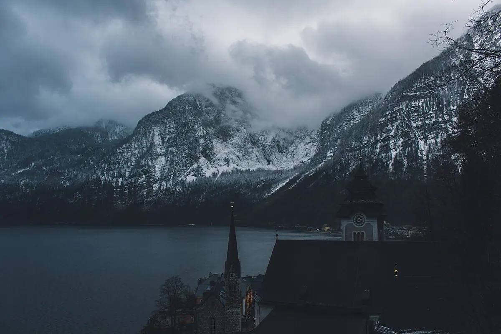
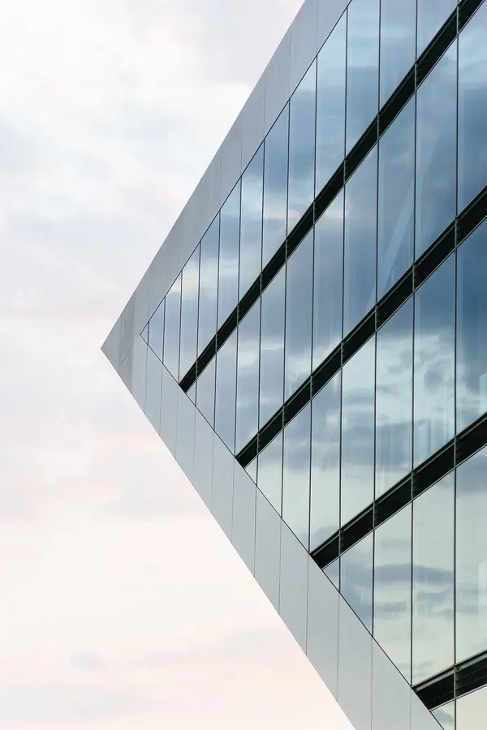
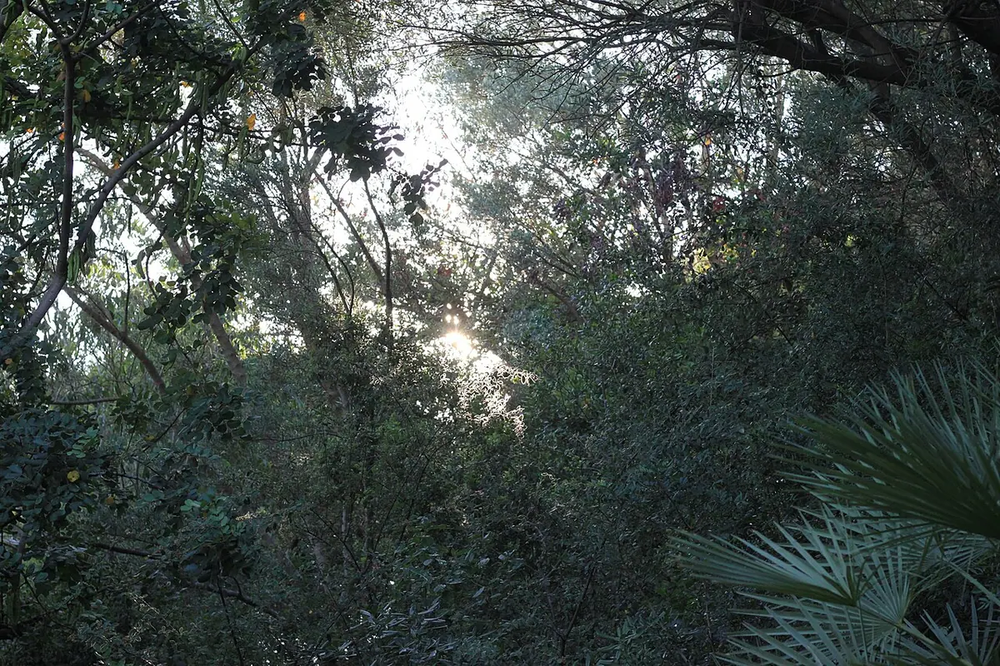
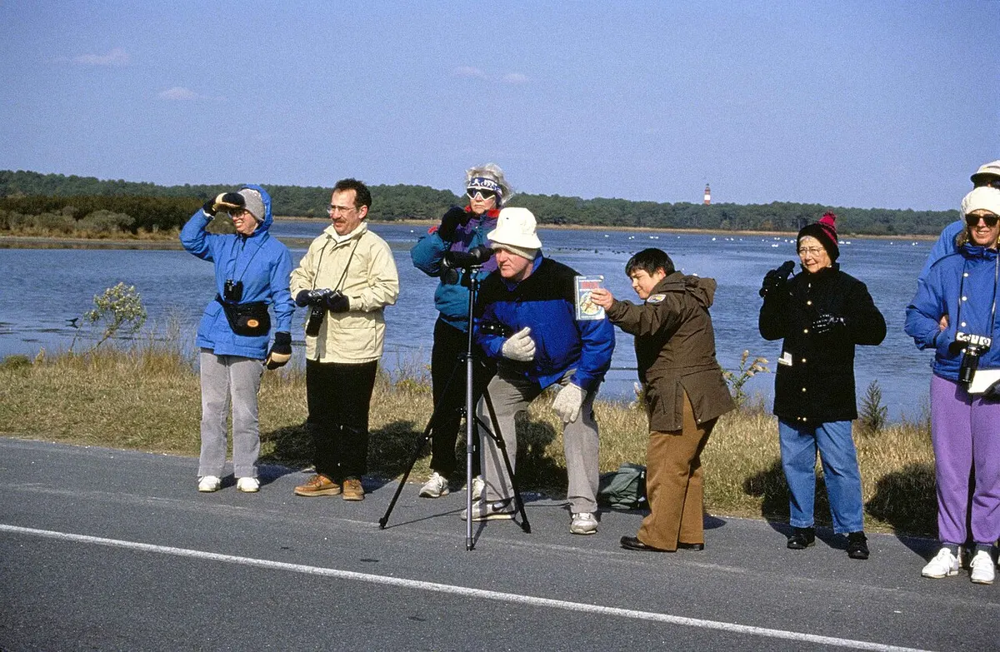

Séries
Des images autour d'un projet.
Démonstration · contenu fictif
Paysages, espaces et lumières. Une sélection photographique, sans détour.





Des images autour d'un projet.
Une sélection de travaux.
La démarche et les inspirations.